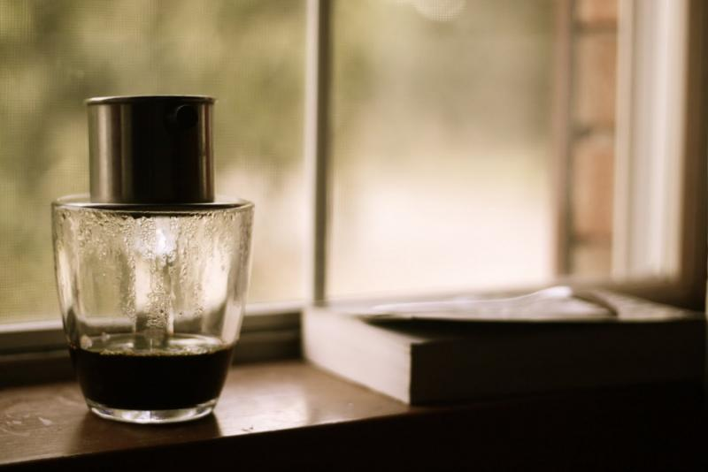
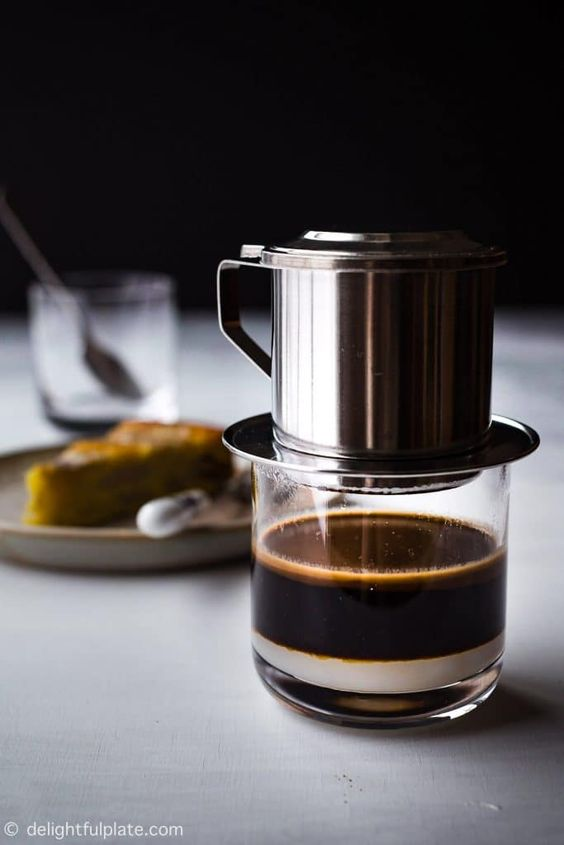

KAF'S CAFE

VĂN HÓA CAFE
Nét đẹp trong văn hóa thưởng thức cà phê của người Việt Nam

Cà phê không biết từ bao giờ đã trở nên gần gũi và quen thuộc với người dân Việt Nam đến thế. Cái vị đăng đắng, đầm đậm bên đầu lưỡi, hương thơm dịu, mùi đất lan tỏa bên tách cà phê khiến cho người ta phải ngất ngây…
Và cứ thế,cà phê đi vào lòng người Việt một cách đằm thắm nhẹ nhàng. Người ta thưởng thức cà phê trong khi làm việc, khi gặp gỡ - bàn chuyện cùng đối tác, khi trò chuyện cùng bạn bè, người thân… Cà phê đóng góp một phần không nhỏ trong cuộc sống, trong công việc của mỗi người.
Nhưng mấy ai đã hiểu được tận tường về nét văn hóa cà phê của người Việt mình? Muốn tìm hiểu, hãy đọc tiếp bài viết dưới đây!.
Sự xuất hiện của cà phê ở Việt Nam
Cà phê có nguồn gốc từ phương Tây, theo chân người Pháp du nhập vào Việt Nam từ thời thuộc địa. Ban đầu thứ thức uống này chỉ dành riêng cho giới quý tộc, các quan chức Pháp, hay tầng lớp trí thức nơi thành thị. Dần dần cà phê trở thành thứ thức uống phổ biến trong cuộc sống của người dân.
Ngày nay cà phê Việt không chỉ được biết đến về sản lượng đứng trong top đầu thế giới mà còn tạo dựng được nét cà phê rất riêng của người Việt. Hai loại cà phê được sử dụng và trồng phổ biến ở Việt Nam là Arabica và Robusta. Mỗi loại đều mang lại tên tuổi của nó ở trong nước cũng như ở nước ngoài về sản lượng, chất lượng, mùi vị.
Nét văn hóa cafe người Việt.
Hương vị cà phê đậm đà đã trở nên quen thuộc trong nhịp sống mỗi ngày của người dân Việt. Sự tinh tế của cà phê Việt thể hiện ở nét văn hóa và phong cách thưởng thức cà phê khác lạ của người Việt.
Người Việt có phong cách thưởng thức cà phê rất riêng, họ không coi cà phê là thức uống nhanh, có tác dụng chống buồn ngủ như người Mỹ mà thưởng thức cà phê như một thứ văn hóa: nhâm nhi và suy tưởng. Ngồi bên tách cà phê, vừa nhấp từng ngụm nhỏ vừa đọc báo, nghe nhạc, trò chuyện cùng bạn bè, cùng đối tác làm ăn, hay ngồi làm việc, và còn để suy ngẫm về cuộc sống, về con người,…
Gu thưởng thức của người Việt là: đậm, đắng, thơm mùi hạnh nhân, mùi đất. Tùy mỗi một loại cà phê mà mang lại cho người thưởng thức cái cảm nhận về vị chua, độ dầu, và mùi hương của các loại hoa trái khác nhau. Một ly cà phê ngon là ly cà phê đậm đà hương vị tự nhiên, có độ chua thanh, tươi, sạch lưỡi; có độ dầu đậm và đặc biệt hơn là tỏa ra hương thơm dịu, dễ dàng chinh phục vị giác của bất cứ ai.

Cà phê phin được coi là thứ thức uống được ưa thích nhất của người Việt. Cái cảm giác ngồi chờ đợi từng giọt từng giọt cà phê rơi thật là thú vị. Càng thú vị hơn nữa khi được nhâm nhi thành quả của nó, có thể là một tách cà phê đen nóng, có thể pha thêm chút sữa, uống nóng hay uống đá tùy theo sở thích của mỗi người.
Người ta có thể đoán biết được tính cách con người, văn hóa của mỗi vùng miền qua cách pha cà phê và sở thích uống của mỗi người. Chẳng hạn, người miền Nam thường bọc cà phê trong tấm vải và nấu trong nồi, họ thích uống cà phê đá hơn là uống nóng. Còn người miền Bắc, chủ yếu uống cà phê pha phin, đen hoặc nâu nhưng đều rất đậm đặc.
Tác dụng của cà phê trong đời sống hàng ngày
Cà phê không đơn thuần chỉ là thức uống giải khát, mà cà phê còn khiến cho người ta tỉnh táo, thư giãn, mang lại sức khỏe cho con người, làm cho người với người gần nhau hơn.
Cà phê giúp nâng cao tinh thần và hiệu quả công việc. Hoạt chất cafeine trong cà phê có tác dụng kích thích hoạt động của trí não, giúp con người có được sự tỉnh táo, minh mẫn và tập trung trong công việc. Ngoài ra còn làm tăng tốc độ tư duy và sáng tạo khiến cho cho hiệu quả công việc được nâng cao. Chính vì vậy mà việc uống cà phê đã trở nên phổ biến nơi công sở.
Cà phê cải thiện sức khỏe cho mỗi người. Cuộc sống tất bật hàng ngày, công việc luôn luôn bận rộn sẽ khiến cho bạn mệt mỏi, căng thẳng, đau đầu khó chịu hay vướng vào một số bệnh như cao huyết áp, tiểu đường típ 2, gan, hen suyễn hay dị ứng… Với việc uống cà phê đủ liều lượng có thể giúp bạn giảm được nguy cơ mắc những căn bệnh trên. Ngoài ra cà phê còn có khả năng làm tăng sức mạnh của cơ bắp, giảm lượng mỡ trong cơ thể.
Theo nghiên cứu, trong cà phê có chứa chất chống ô–xy hóa và khoáng chất làm tăng khả năng phản ứng của cơ thể với isulin, làm tăng lượng isulin trong máu, và giảm nguy cơ mắc bệnh tiểu đường. Đặc biệt chất caffein trong café lại rất có tác dụng đối với những người mắc bệnh cao huyết áp, giảm nguy cơ mắc bệnh hen và dị ứng. Theo nghiên cứu của người Ý, họ theo dõi trên 70.000 người, kết quả là sự khẳng định caffeine là “khắc tinh” của bệnh hen. Nếu uống từ 2 đến 3 ly cafe mỗi ngày thì nguy cơ bị các cơn hen tấn công sẽ giảm 28%.

Special Items
 |
 |
 |
| Soft Deli Cup 10$ |
Coffee Art 12,5$ |
Speciality Tea 13$ |
Liên hệ
Công Ty cổ Phần Kaf's cafe
Địa chỉ: Tầng 3-4, Tòa nhà Việt Tower, số 01 Phố Thái Hà, Phường Trung Liệt, Quận Đống Đa, Thành phố Hà Nội
Điện thoại: O369142342 - Mã số thuế: 01087874679
Giấy phép mạng xã hội số 370/GP-BTTTT do Bộ Thông tin Truyền thông cấp ngày 09/09/2007